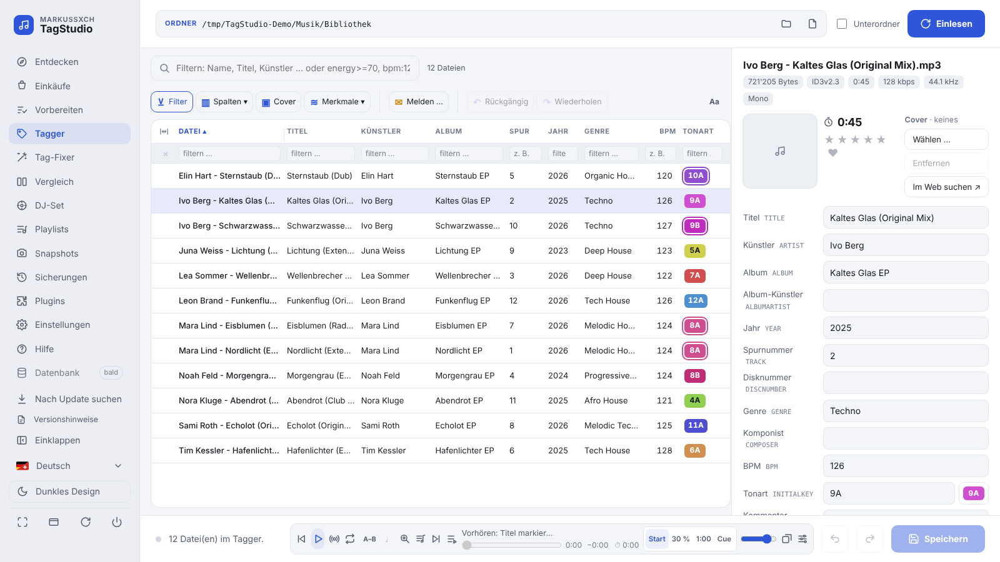
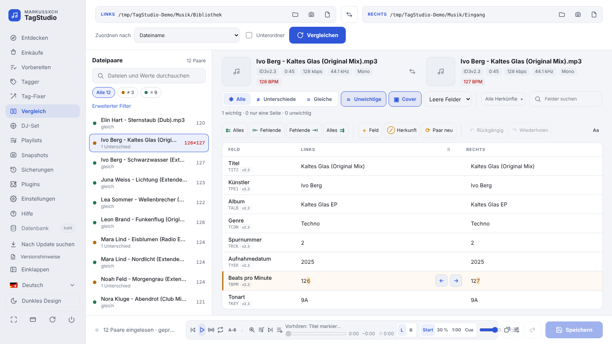
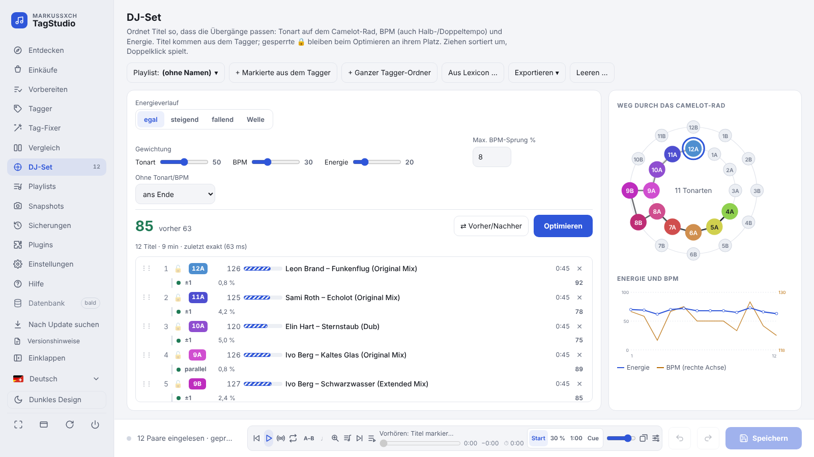
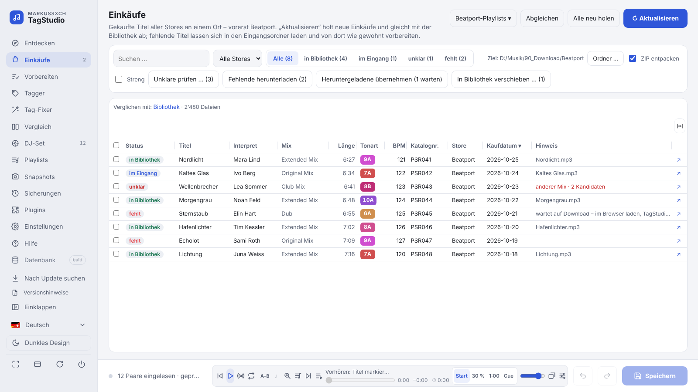
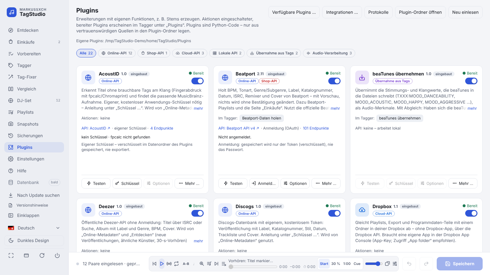

MarKusSXCH TagStudio
Der Werkzeugkasten für die MP3-Bibliothek von DJs: taggen, vergleichen, aufräumen, Einkäufe abgleichen und Sets planen – für Windows und macOS. Kostenlos und quelloffen.
Neueste Version auf GitHub

Was TagStudio kann
🏷️ TaggerViele Dateien gemeinsam bearbeiten, Cover, Tags aus dem Dateinamen, Umbenennen, Export nach Excel/CSV.
⚖️ VergleichZwei Ordner oder Dateien Feld für Feld – zeichengenau markiert, Werte per Pfeil übernehmen.
🧹 Tag-FixerMehrfachwerte (; / feat. …) vereinheitlichen, Smart-Fix-Rezepte, Ausnahmen je Feld.
🛒 EinkäufeBeatport-Käufe mit der Bibliothek abgleichen, fehlende laden, Playlists in Beatport anlegen.
🎛️ DJ-SetReihenfolge nach Tonart (Camelot), BPM und Energie – Export als M3U8, Rekordbox-XML, CSV.
📂 PlaylistsTitel sammeln und ordnen, als M3U8 für Engine DJ, VirtualDJ & Co.
🎧 Vorschau-PlayerWellenform, Cue-Marken (Serato, Mixed In Key), Überblenden mit Tempo-Angleichung.
🛡️ Sicher speichernSicherung vor jedem Speichern, Rückgängig über alle Dateien, Snapshots.
🧩 PluginsStems, Beatport, Discogs, MusicBrainz, Lexicon, Cloud-Abgleich (OneDrive, Google Drive, Dropbox).
Bilder




Bilder mit erfundenen Beispieltiteln.
Installation
WindowsSetup herunterladen und ausführen – ohne Administratorrechte.
Der Installer ist nicht signiert: bei „Der Computer wurde durch Windows geschützt“ Weitere Informationen → Trotzdem
ausführen.
macOS (Apple-Chip)Disk-Image öffnen, TagStudio auf „Programme“ ziehen und starten. Hinweise
zum ersten Start stehen in „Zuerst lesen.txt“ im Disk-Image.
Aus dem QuellcodePython 3.12 oder neuer,
git clone https://github.com/MarkusKeller8200/markussxch-tagstudio.git, dann
start_windows.bat bzw. start_mac.command. Details im Handbuch.